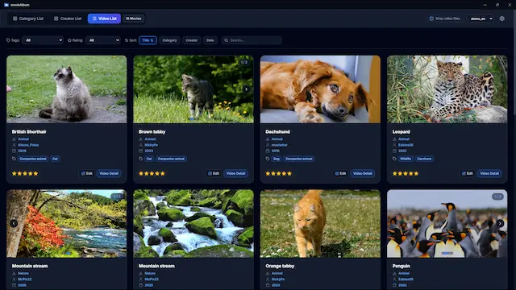
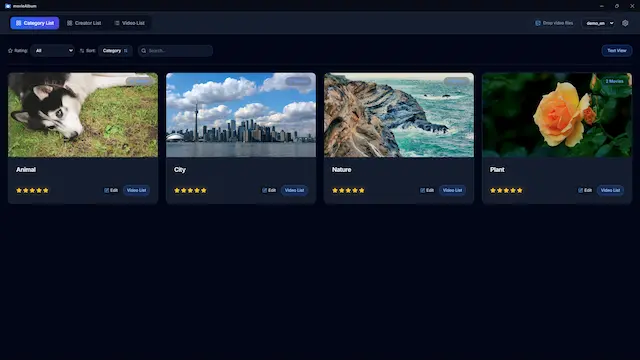
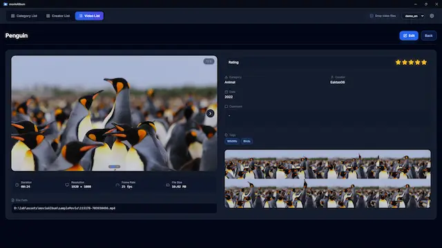
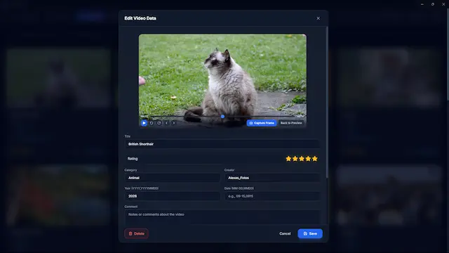

About MovieAlbum
MovieAlbum is a Windows application designed to help you efficiently organize and browse your video
collections.
While most video management apps only allow you to rate or tag the video files themselves, this
approach has limitations. For example, if you want to organize a movie collection by lead actors,
you cannot separate the actor's information from the movie's data.
MovieAlbum solves this problem. In addition to managing individual videos, it allows you to generate
and organize custom cards based on categories you choose. Experience a whole new level of
flexibility in managing your media library.
Examples of use
- Movie collection: Organized by genre, lead actor, and director
- Travel memories: Organized by destination, year, and the people who went along
- Food/dining videos: Organized by genre, area, and price range


You can filter videos by category, name, year, tags, and rating, and sort them by title, category, name, or publication date. Clicking a thumbnail launches the video player.

You can assign tags and ratings to these categories independently of the individual videos. Filtering by tags or ratings and sorting by the defined categories are supported. Clicking a thumbnail navigates to a filtered list of videos.

Grouped videos are displayed in a slider format. Clicking a thumbnail launches the video player.

You can set a favorite moment as the thumbnail (some limitations apply depending on the video format).
Key Features
- Flexible Classification: Easily categorize and sort your videos by category, character/cast, rating, custom tags, and more.
- Custom Lists: Create personalized video lists based on your selected criteria to find exactly what you want to watch instantly.
- Scene Bookmarks: Save your favorite moments as thumbnail images for quick access (some limitations apply depending on the video format).
- Smart Grouping: Group related videos together to keep your workspace clean and organized.
- This app does not make any changes to video data.
Supported file types
- mp4
- m4v
- webm
- ogv
- ogg
- avi*
- wmv*
- and more.
* has limitations.
Download MovieAlbum today and elevate your video viewing experience!
Update History
- version 1.4.0
-
- Added timeline thumbnails to the video details screen.
- version 1.3.1
-
- UI improvements, bug fixes.
- version 1.3
-
- You can now create up to 3 custom lists.
- Fixed an issue with ungrouping.
- version 1.2.3
-
- UI for tags improved.
- version 1.2.2
-
- Adjusted the layout of the video details screen.
- Fixed a tab key operation bug.
- Added open source license attribution.
- version 1.2.1
-
- Minor text corrections.
- version 1.2.0
-
- Changed the display of group videos to a slider format.
- Support for Simplified Chinese and Traditional Chinese has been added.
- version 1.1.0
-
- Added search functionality.
- Improved thumbnail generation for WMV and other video formats.
- Adjusted layout on window resizing.
- version 1.0.1
-
- Added support for switching configuration files.
- Improved performance.
- version 1.0.0
-
- Switching configuration files is now supported.
- Initial release.
Privacy Policy
- This app does not collect, store, or transmit any personal data.
- No information is shared with external servers or third parties.
License & Acknowledgements
MovieAlbum is released under the MIT License.
This application bundles and uses FFmpeg (GNU GPL v3.0, gyan.dev
build) for video thumbnail generation and metadata parsing. For inquiries regarding the
source code of bundled binaries, please contact us via the GitHub repository or developer.